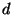

Once one is sure that a newly booted system is good enough to replace the old system, issuing the installml command will replace old heap image and old libraries with those generated by the previous run of makeml.
$ ./installml
This command will replace the system's heap image in ../../bin/.heap and its libraries in ../../lib. However, it will leave alone any unrelated libraries in ../../lib.
Sometimes changes to the compiler will render any previously installed libraries unusable. In this case one should erase them prior to issuing the installml command:
$ rm ../../lib/* $ ./installml
Libraries that were installed as part of the SML/NJ installation process but which are unrelated to bootstrap compilation (e.g., $/inet-lib.cm, CML, eXene) can be recovered (once they had been removed) by going back to the installation directory and issuing the config/install.sh command again:
$ cd ../.. $ config/install.sh
Since some changes to the compiler also render old binfiles unusable, one will occasionally have to remove those first (prior to re-running config/install.sh). Binfiles for libraries unrelated to bootstrapping are handled by CM (and not CMB), so the usual CM rules for locating them apply. (This means that in such a case the binfile for /.sml will be in /CM/ arch- os/.sml where arch is a string describing the CPU architecture and os is a string describing the operating system kind. Example: x86-unix.)